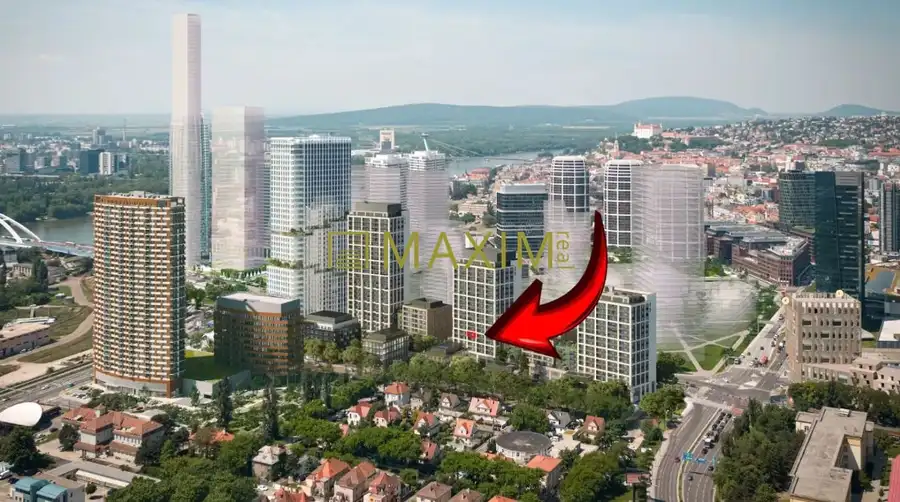
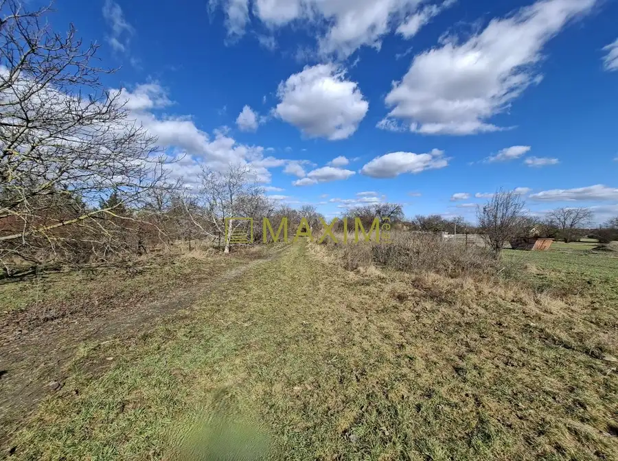
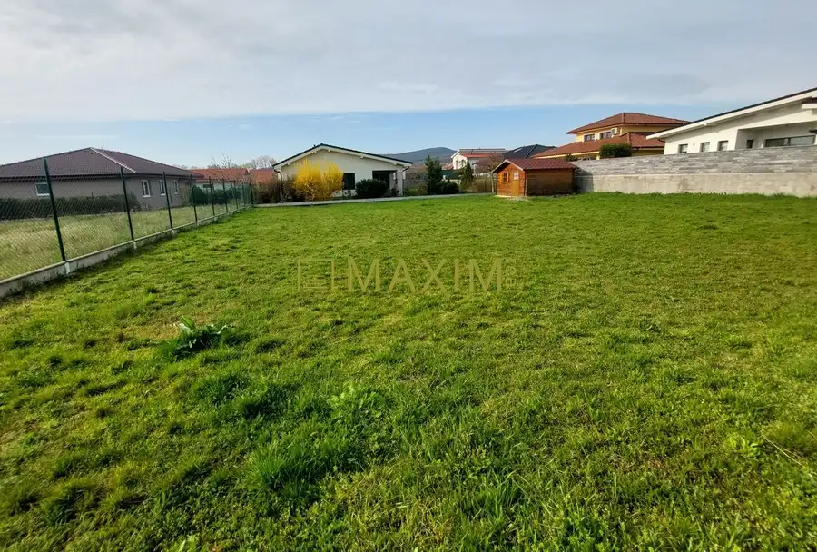

S garážovým státím a záhradkou 3 izbový byt na ul. Široká v Bratislave
Vajnory, Bratislava
- Dispozícia3-izbový
- Plocha69 m²
- Poschodie1. z 3
- StavKompletná rekonštrukcia
- VlastníctvoOsobné
O nehnuteľnosti
Ponúkame na predaj 3 izbový byt na ulici Široká v Bratislave – Vajnory.Nachádza sa na 1. poschodí v 3. poschodovom bytovom dome s vlastnou kotolňou, skolaudovanom v roku 2006 bez výťahu. VÝMERA:Byt vo výmere 69 m2, loggia 2,5 m2, samostatná murovaná pivnica na -1. poschodí 3,1 m2. Terasa 25 m2 a záhrada 37 m2. Garážové státia na -1. poschodí sú vo výmere 25,13 m2.REKONŠTRUKCIA:Byt bol zrekonštruovaný v 11/2024 – nová sanita (sprchový kút, umývadlo, toaleta), nové omietky, podlahy (drevené, dlažba). V roku 2026 nové vstavané spotrebiče - umývačka riadu, indukčná varná doska, elektrická rúra a chladnička s mrazničkou.DISPOZÍCIA:Vstupná predsieň, z ktorej sa vchádza do všetkých miestností. Vľavo sa nachádzajú obe spálne, z jednej spálne je vstup na loggiu. Vedľa je kúpeľňa so sprchovým kútom, dvomi umývadlami a samostatná toaleta. Vpravo je samostatný šatník a kuchyňa spojená s jedálenskou a obývacia časťou so vstupom na terasu a záhradu.ZARIADENIE BYTU:Kuchynská linka so vstavanými spotrebičmi – indukčná varná doska, elektrická rúra, digestor, mikrovlnná rúra, umývačka riadu, chladnička s mrazničkou, jedálenský stôl so stoličkami. Klimatizácia v obývacej izbe s kuchyňou. V predsieni je vstavaná skriňa. Všetky okná majú vonkajšie žalúzie. Alarm v byte.Orientácia bytu – obývacia izba s kuchyňou, terasa a záhrada - V, obe spálne s loggiou - Z.Mesačné náklady: Správca 217,- z toho FO 110,- Eur, Elektrina 50,-.Byt sa predáva nezariadený (okrem vstavaného nábytku).Parkovanie – dve garážové státia na -1. poschodí v cene 33.000,-. (Podmienkou kúpy).LOKALITA:Vajnory – sú mestskou časťou Bratislavy s prevažne rodinnými domami. Kompletná občianska vybavenosť – materská a základná škola, zdravotné stredisko, MHD, obchody – OC Vajnoria (Tesco, DM,...), Lidl, vlaková stanica, v blízkosti Vajnorské jazero.Prečo kúpiť tento byt :- Kompletne zrekonštruovaný byt - Terasa, záhrada a dve garážové státia - Lokalita s kompletnou občianskou vybavenosťouKonečná cena nehnuteľnosti s garážovými státiami je 350.000,- Eur, v ktorej sú zahrnuté aj všetky poplatky, právny a hypotekárny servis. Kontakt: Lucia Klinková, klinkova@maximreal.sk, tel: 0911 222 985V prípad využitia služieb nášho hypotekárneho poradcu Vám znalecký posudok preplatíme !
Parametre
| Cellar area | 3 m² |
|---|---|
| Cena vrátane energií | Nie |
| Druh | 3 izbový byt |
| Dátum zverejnenia | 7. 10. 2026 |
| Energetický certifikát budovy | nie je |
| Plocha lodžie | 2 m² |
| Plocha predzáhradky | 37 m² |
| Plocha terasy v m2 | 25 m² |
| Podlažie | 1 |
| Počet nadzemných podlaží | 3 |
| Počet parkovacích miest v garáži | 2 |
| Rok výstavby | 2006 |
| Stav nehnuteľnosti | Kompletná rekonštrukcia |
| Typ | Predaj |
| Typ konštrukcie | Tehlová |
| Umiestnenie | Ďalšie nadzemné podlažie |
| Vlastníctvo | Osobné |
| Vybavenie | Lodžia, Terasa, Predzáhradka, Garáž, Pivnica, Verejné parkovanie |
| Zariadenie | Čiastočne zariadené |
| Úžitková plocha | 69 m² |
Kde to je


Mohlo by Vás zaujímať

BytNové8 333 000 €Vo výstavbe – V projekte Downtown Yards 2 izbový byt s garáž. státím Ružinov, Bratislava 2-izbový52.22 m²5. podlažie Ponúkame na predaj 2 izbový byt v projekte DownTown Yards s výnimočným londýnskym charakterom a architektúrou s medzinárodným štandardom.Byt je…
PozemokNové6 469 500 €Stavebný pozemok pre RD v obci Most pri Bratislave na ulici Športová Most pri Bratislave 1865 m² Ponúkame na predaj pozemok o výmere 1865 m2 v obci Most pri Bratislave na Športovej ulici. Približná šírka pozemku je 11,6 m2 x dĺžka 160,7 m2. Na…
PozemokNové6 295 000 €Predaj stavebného pozemku pre RD na ulici Vavrinecká v Limbachu Limbach 759.5 m² Ponúkame na predaj stavebný pozemok na výstavbu RD v Limbachu na Vavrineckej ulici na začiatku obce mimo hlavnej cesty.Pozemok ma ideálne rozmery na…